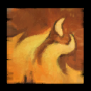
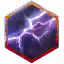

Hammer Catalyst
 Power Catalyst
is very hard to learn; but like a catalyst, once you get going, it is somewhat easy to master. This build features the
hammer variant.
Power Catalyst
is very hard to learn; but like a catalyst, once you get going, it is somewhat easy to master. This build features the
hammer variant.
It is surprisingly tanky for an
Elementalist
due to reduced incoming condition damage with
Icy Coil
and reduced incoming strike damage with
Rocky Loop
.
Almost half of your skills are ranged
(

Fire Attunement
and
 Air Attunement
),
though melee encounters are still preferred due energy generation from orbs.
Air Attunement
),
though melee encounters are still preferred due energy generation from orbs.
It can provide up to approximately
7.5
 Might, 60%
Might, 60%
 Fury, 33%
Fury, 33%
 Protection, and 33%
Protection, and 33%
 Resolution.
Resolution.
Profession Mechanics
Jade Spheres
10 energy is depleted when deploying a jade sphere, and 30 energy is the maximum you can hold. Energy is generated each hit only if a jade sphere is not active.
One option is to deploy a sphere when >10 energy. This is inefficent because energy will not be generating most of the time leading to a prolonged duration auto-attacking in one attunement, or not deploying the sphere at all. This is however the most intuitive, and is actually performed if mistakes were made in the rotation.
Another option is to deploy three spheres when =30 energy.
This is also somewhat inefficient because there is some amount of time during the second sphere where energy is not generating, or not using weapon skills at all.
Additionally, deploying three spheres at a time when there exists four implies the sphere deployment order shifting every loop, or not deploying one sphere at all.
This is the least intuitive, but is performed in the
 Quickness variant because this leads to a fast loop, and not deploying some spheres is a loss worth having.
Quickness variant because this leads to a fast loop, and not deploying some spheres is a loss worth having.
The ideal option is to deploy spheres in sets of two when >20 energy. This is because very minimal time is spent not generating energy. Additionally, deploying two spheres at a time when there exists four leads to a good balance between a semi-fast but still semi-intuitive loop.
Level Ⅱ - Sets of Two ( )
- Auto-attack in Earth until >20 energy
- Deploy Earth Sphere + Fire Attunement + Deploy Fire Sphere
-
Auto-attack in
Fire
(or
Air)
until >20 energy
- Deploy Air Sphere + Water Attunement + Deploy Water Sphere
 Hammer
Hammer


Level Ⅰ - Auto-attack | ... ...
Auto-attacks in Fire and Earth have the largest coefficients.Level Ⅱ
-
Hammer-3
|
Orbs are a big part of your energy generation, which is why we want to eventally have all four orbs. We prioritize
Flame Wheel
(increased outgoing damage) and
Crescent Wind
(increased critical strike chance) first for early damage buffs.
Auto-attack whenever because the orbs are instant-cast.
- Flame Wheel
-
Crescent Wind
- Icy Coil
- Rocky Loop
-
Grand Finale
ideally in
Fire but
Earth is fine when if mistakes
Level Ⅳ
-
Hammer-2
Level Ⅴ
-
Hammer-5
Level Ⅵ
-
Hammer-4
|
Use
Crashing Font
whilst in
Air Sphere
for a
Elemental Empowerment stack from
 Dazing Strike.
Dazing Strike.
Level Ⅺ - Feasible Optimizations
Only if very very confident and proficient. The impacts from these optimizations are pretty much negligible, but is not as punishing if not executed flawlessly.-
Can use
Deploy Earth Sphere
before
Whirling Stones
- Benefit: Can possibly sneak/finish an auto-attack in Earth and for more leeway in timing the Deploy Earth Sphere + Fire Attunement + Deploy Fire Sphere combo
- Drawback: Non-intuitive
-
Can use
Triple Sear
before
Relentless Fire
- Benefit: Better recovery if entering Fire Attunement too fast
- Drawback: No Damage buff from Relentless Fire
Level Ⅻ - Advanced Optimizations
Only if very very very confident and proficient. The impacts from these optimizations are pretty much negligible and can instead backfire resulting in a loss.-
Can slightly prolong
Hurricane of Pain
to stay in
Air
-
Can use
Surging Flames
before
Molten End
- Benefit: Can lead to a faster loop as Molten End might not be up after Triple Sear
-
Drawback:
Careful as
Shock Blast
might not be up once in
Air Attunement
-
Can use
Orbs
during
Swapping Attunements
and some
 Skill Animation
Skill Animation
-
Benefit:
Mainly for
Crescent Wind
before
Shock Blast
- Drawback: Hard to do at high ping and almost no impact for Icy Coil and Rocky Loop
-
Benefit:
Mainly for
.png)

Crowd Control
-
Shock Blast
: 150
 Defiance Damage
Defiance Damage
-
Wind Storm
: 200
 Defiance Damage
Defiance Damage
Notes
-
Try to not double-tap
Orbs,
as
Grand Finale
can preemtively cast
-
Crashing Font
,
Wind Storm
: Mobility but
locks in animation and careful to not fall off
- Try to aim Triple Sear such that all three hits hit
Slot Skills
Level Ⅴ - Optimizations
- Can delay Shattering Ice into Earth but still in Water Sphere
Options
Niche
-
Soothing Water
:
Self
Healing,
Self
 Condition Cleanse
Condition Cleanse
General Rotation
Opener
- Firestorm
- Flame Wheel + Deploy Fire Sphere at the end of Firestorm
Traits
Catalyst 2-1-2
-
Vicious Empowerment
:
All Stats
&
Might
∝
Hard CC
&
 Immobilize
Immobilize
- Empowering Auras : Damage ∝ Auras
- Empowered Empowerment : All Stats ∝ Stacks
 Air 3-3/2-1
-
Ferocious Winds
:
 Ferocity
∝
Ferocity
∝
 Precision
Precision
-
Stormsoul
:
Damage
∝
 Defiant & Disabled;
↑
Stun Duration
Defiant & Disabled;
↑
Stun Duration
-
Raging Storm
:
Ferocity
=
Fury;
Fury
∝
Critical Chance
-
Raging Storm
:
-
Bolt to the Heart
:
Damage
∝
↓
Enemy
 Health
Health
 Fire
1-3-1
Fire
1-3-1
- Burning Precision : Burning ∝ Critical Chance, ↑ Burning Duration
-
Power Overwhelming
:
 Power
∝
Might
&
Fire Attunement
Power
∝
Might
&
Fire Attunement
-
Persisting Flames
:
Damage
∝
 Fire Field,
↑
Fire Field Duration
Fire Field,
↑
Fire Field Duration
Gear
-
Stats:
Berserker's
-
Runes:
 Superior Rune of the Scholar
Superior Rune of the Scholar
- Sigils: Superior Sigil of Force + Superior Sigil of Impact
-
Consumables:
 Peppercorn-Crusted Sous-Vide Steak
+
Peppercorn-Crusted Sous-Vide Steak
+
 Superior Sharpening Stone
Superior Sharpening Stone
Budget Gear
-
Stats:
Berserker's
-
Runes:
 Superior Rune of the Flame Legion
Superior Rune of the Flame Legion
-
Sigils:
Superior Sigil of Force
+
 Superior Sigil of Air
Superior Sigil of Air
-
Consumables:
 Plate of Spicy Moa Wings
+
Superior Sharpening Stone
Plate of Spicy Moa Wings
+
Superior Sharpening Stone